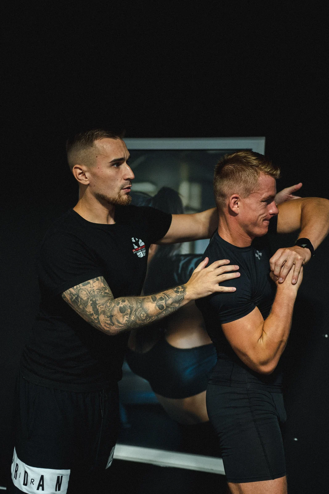
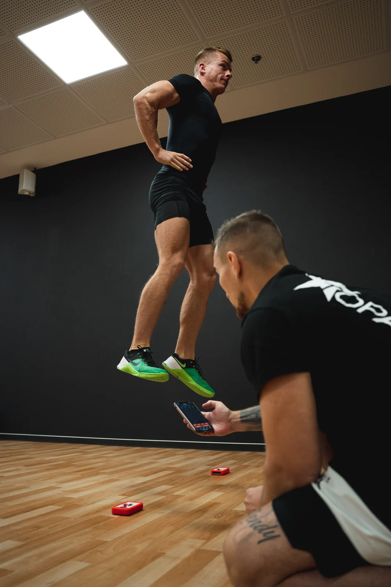
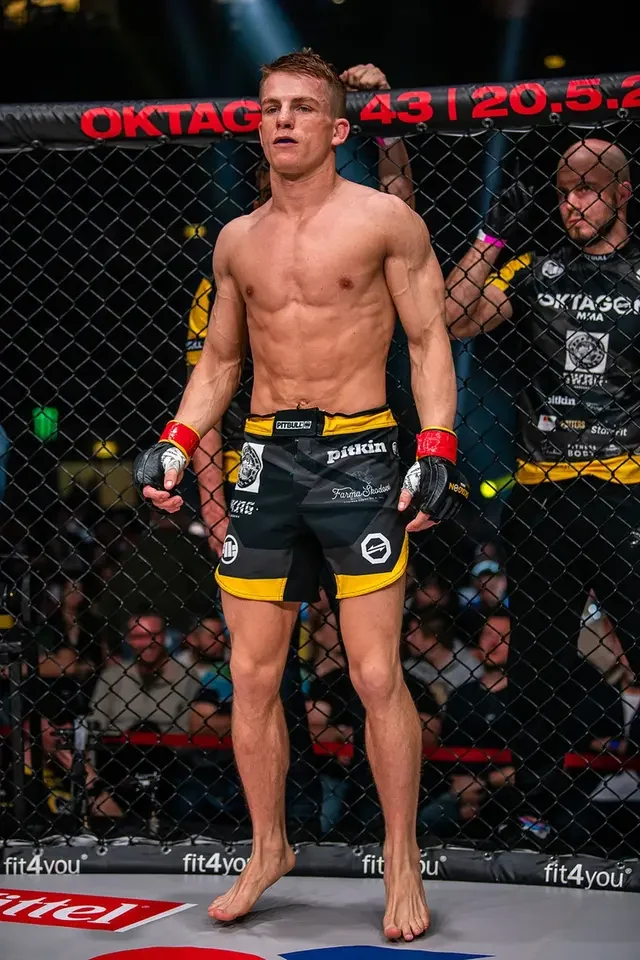

Plán podle tebe
Trénink přizpůsobím tvým cílům, úrovni, časovým možnostem i vybavení, které máš k dispozici.
Radek Rosa · Individuální spolupráce
Tvé cíle. Moje strategie.
Tréninkový plán, který sedí tvým cílům, času i vybavení. Pravidelná zpětná vazba a vedení, ať trénuješ kdekoli.
Pro sportovce i hobby cvičence se zkušeností se silovým tréninkem.

Spolupráce, která má systém
Trénink přizpůsobím tvým cílům, úrovni, časovým možnostem i vybavení, které máš k dispozici.
Kontrola techniky přes videa, týdenní reporty a vyhodnocování pokroku. Víš, na čem pracovat dál.
Doma, v posilovně nebo venku. Plán respektuje tvoje možnosti a přizpůsobuje se zpětné vazbě.
Instruktážní videa u cviků, záznam zátěže i vlastních pocitů. Vše najdeš v tréninkové aplikaci.

Trénink s jasným směrem
Zkušenost s online coachingem

"S Radkem pracuji druhým rokem formou online coachingu a musím říct, že jsem hodně spokojeny. Má profesionální přístup a velke znalosti daného sportu. 👍"
Než začneme
Počet tréninků závisí na tvých preferencích a časových možnostech. Může to být jeden trénink týdně, nebo také šest.
Ne. Spolupracuji také s hobby cvičenci, kteří chtějí nabrat svalovou hmotu, zhubnout tuk nebo zlepšit kondici. Program vždy přizpůsobuji individuálním potřebám a možnostem.
Online coaching není určený pro úplné začátečníky. Vyžaduje určitou zkušenost se silovým tréninkem a základní orientaci v posilovně. Pokud si nejsi jistý, ozvi se a společně to probereme.
Přes WhatsApp nebo přímo v tréninkové aplikaci. Plán upravuji na základě týdenního vyhodnocení pokroku a tvé zpětné vazby.
Napiš mi, čeho chceš dosáhnout. Společně probereme možnosti spolupráce.
Raději zavoláš? +420 603 168 382